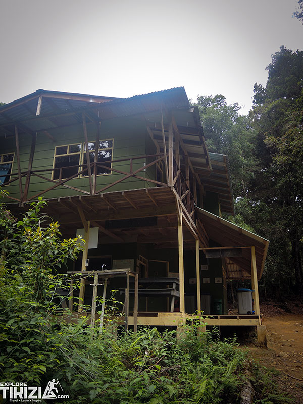

San Ramón de Alajuela
Instant confirmation
Poás Volcano
Poás Volcano
& Río Agrio waterfall.
A full day out from San Ramón or San José: the active crater at Poás, the cloud forest at Bajos del Toro, and a swim under Río Agrio. Book it now and the seat is yours — no separate checkout, no waiting to hear back.
- DurationFull day · ≈ 9 h
- DifficultyEasy · 1 of 5
- Pick-upHotel, San Ramón area
- ModeOur own departure
1 stepReserve and pay together — not five, across four platforms
$85Child price, set in advance — not decided at checkout
Easy · 1/5Suitable for most visitors, stated up front
0 tabsEverything below is open by default
Before you book
Is this the right day for you?
Difficulty
Easy 1 of 5
Short paved paths at the crater viewpoint; a level trail to the waterfall. No climbing or rappelling.
- You can walk 20–30 minutes on a flat or gently sloped path
- You are fine getting your feet wet at the waterfall — swimming is optional
- Good for first-timers and for families with older children
- The crater viewpoint can close on short notice due to volcanic activity — we monitor SINAC status the morning of the tour
- Not ideal if you cannot tolerate cool, high-elevation weather (Poás sits at 2,700 m)
The detail
Everything, before you pay.
- Duration
- Approximately 9 hours, door to door.
- Departure
- Morning pick-up, confirmed with your exact time right after booking.
- Meeting point
- Hotel pick-up in the San Ramón de Alajuela area. Pick-up from San José is available — ask before booking.
- Group
- Shared departure, up to 10 people. Private departures on request — see the itinerary form.
- Guide
- Rodrigo or a local guide he works with directly, in English and Spanish.
- Cancellation
- Full refund up to 48 hours before departure. Policy shown here is a placeholder — final wording pending the client.
Included
- Round-trip transport from the meeting point
- Entrance fee to Poás Volcano National Park
- Guided walk at Bajos del Toro
- Bottled water
Not included
- Meals — a lunch stop is included in the schedule, food is on you
- Gratuities
- Personal travel insurance
Bring with you
- Warm layer — Poás is cold and windy at altitude
- Swimwear and a towel, for the waterfall
- Closed shoes with grip
- Sun protection for the lower elevation stops
From travellers
What people say after this one.
The service could not have been better. I recommend Explore Tikizia, and our planner, coordinator and driver, Rodrigo Santamaria, without reservation.
Rodrigo was beyond amazing. Knowledgeable, patient, and he made every part of the trip feel effortless.
Prototype placeholder — these are the two real reviews already on the current site. A dedicated review programme for tour-specific quotes is proposed as an optional module.
Add a second day
All tours
Book two, and we coordinate the pick-ups.
 Chirripó Valley
Chirripó Valley
 San Gerardo de Rivas
San Gerardo de Rivas
On request · reply within 24 h
Cerro Chirripó summit · 3 days
$395per adult · $310 child
Check dates